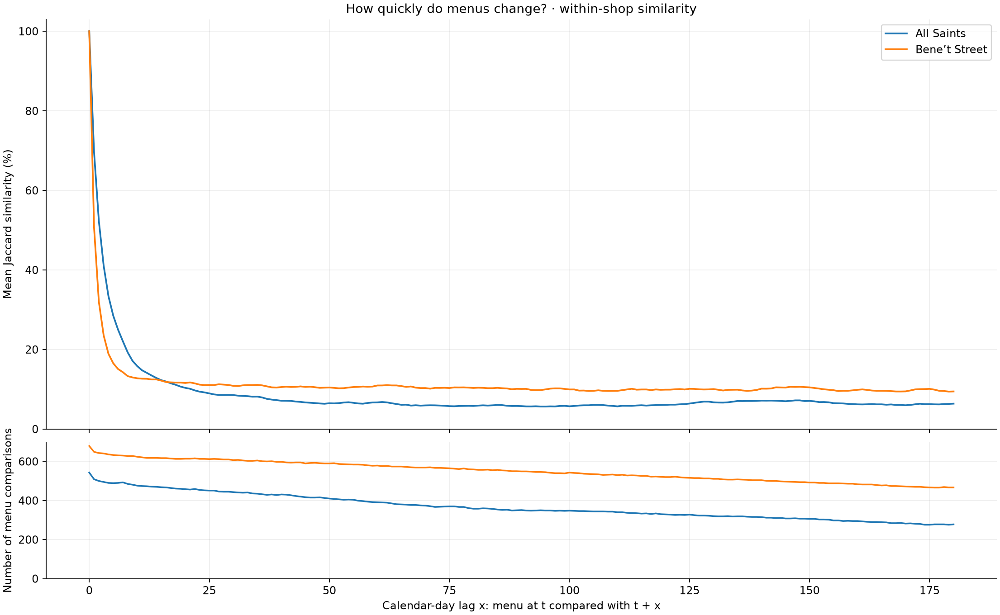
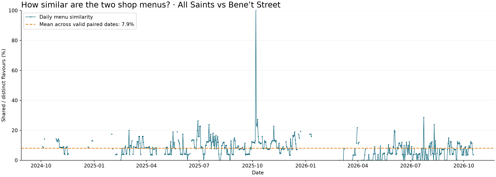
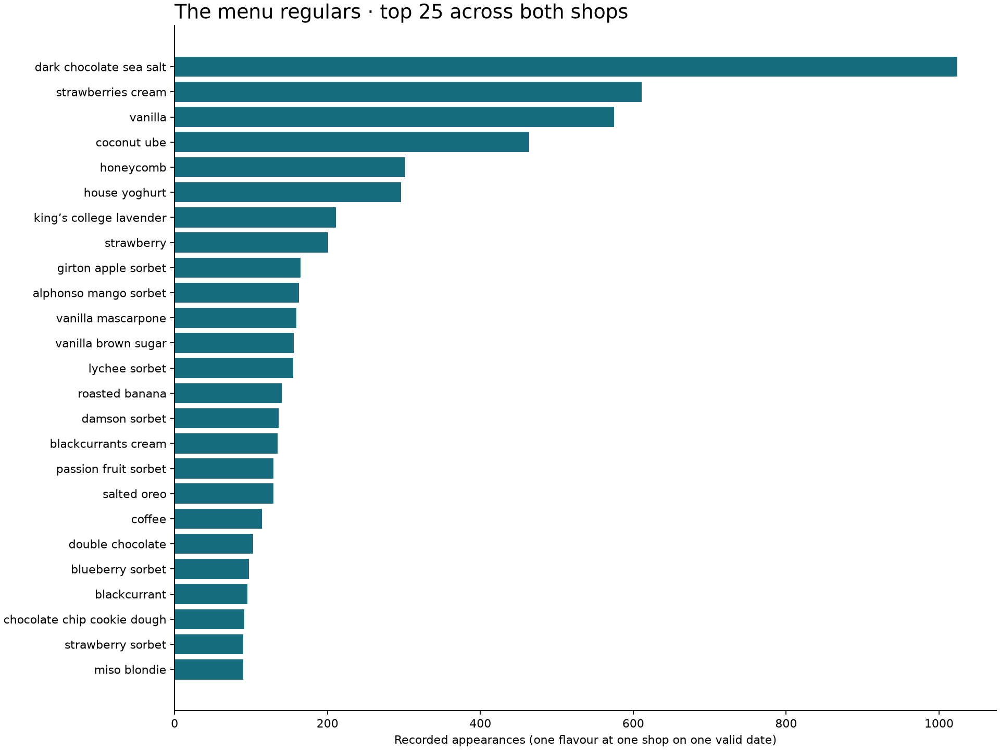
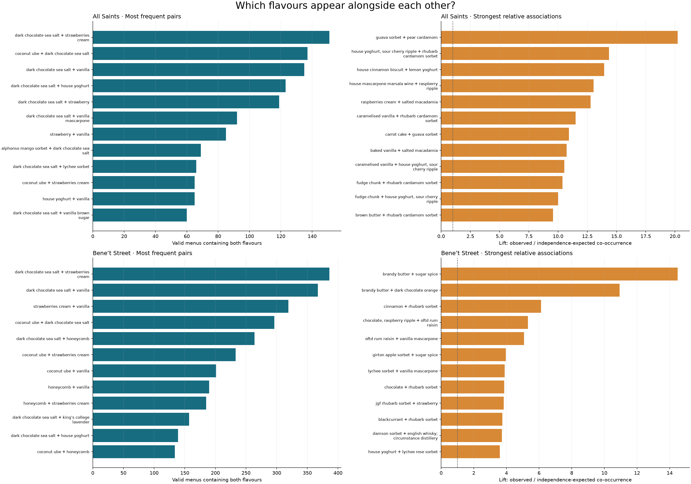
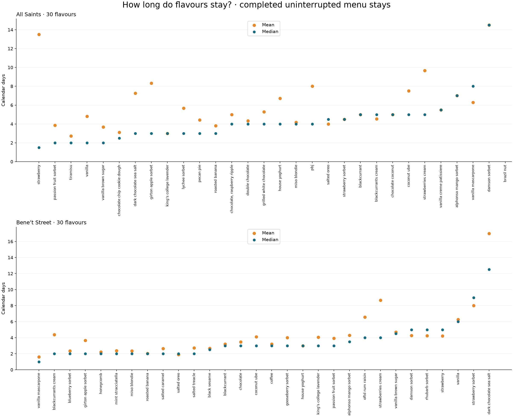
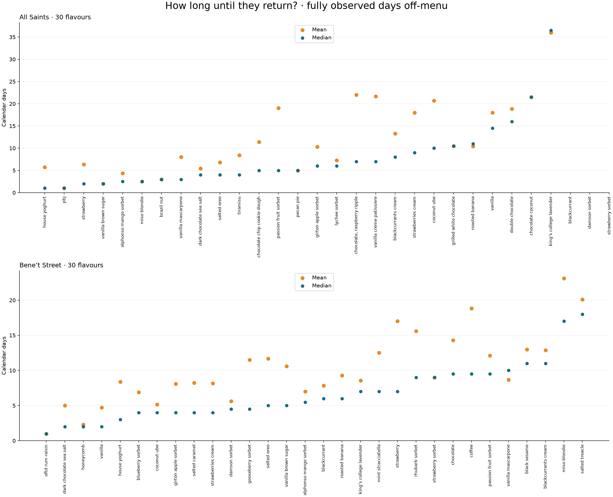
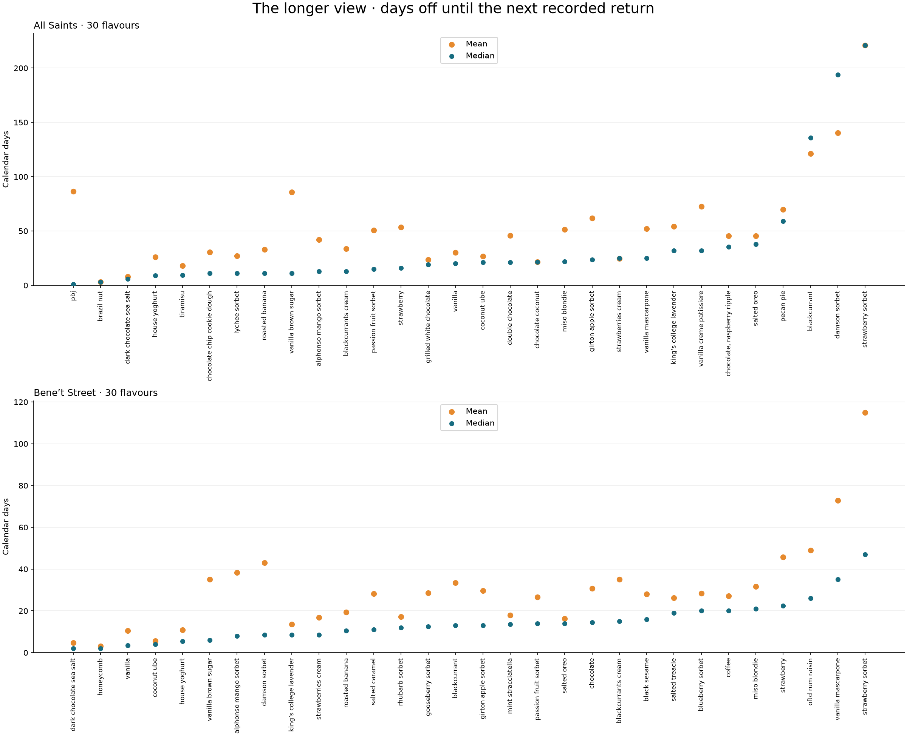
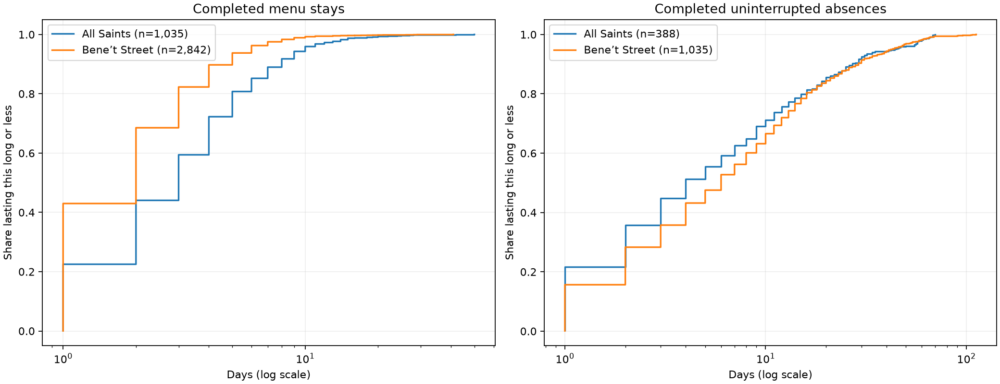

Descriptive menu history · 2024-10-04 to 2026-10-17
For each shop and calendar-day lag x, compare the sets of flavours at t and t + x using Jaccard similarity, then average equally over valid date pairs. Lag zero is 100%. Missing endpoints are excluded; intervening missing days do not change the calendar lag. The lower panel counts the menu comparisons used in the average above. For example, at a seven-day lag, Monday’s menu compared with the following Monday’s menu is one comparison. Both menus must be recorded and parsed successfully; otherwise that comparison is excluded.

This is a menu-similarity correlogram, not a Pearson autocorrelation or fitted AR(1). Repeated favourites can produce a positive long-run floor, and seasonal or weekly recurrence can produce bumps. No declining shape is imposed. Overlapping pairs are dependent; no independent-pair confidence intervals are shown. Download lag statistics · Inspect title matching.
Daily similarity = shared flavours ÷ distinct flavours across both menus × 100 (Jaccard similarity). Identical nonempty menus score 100%; menus with no overlap score 0%. Dates missing either valid menu are gaps, not zeros. Conjunction-normalized flavour labels are compared; other unmerged naming variants can reduce measured overlap.

Across 526 comparable dates, mean similarity is 7.9% and median is 8.0%. Each date has equal weight. Download daily counts and percentages.
The 100% spike on 7 October 2025 reflects identical sets of 14 canonical labels in the two recorded menus. It is retained as recorded; these data alone cannot distinguish a genuinely identical menu from a collection duplication.

| flavour | Recorded appearances | Share of valid shop menus (%) |
|---|---|---|
| dark chocolate sea salt | 1024 | 83.8 |
| strawberries cream | 611 | 50.0 |
| vanilla | 575 | 47.1 |
| coconut ube | 464 | 38.0 |
| honeycomb | 302 | 24.7 |
| house yoghurt | 296 | 24.2 |
| king’s college lavender | 211 | 17.3 |
| strawberry | 201 | 16.4 |
| girton apple sorbet | 165 | 13.5 |
| alphonso mango sorbet | 163 | 13.3 |
| vanilla mascarpone | 159 | 13.0 |
| vanilla brown sugar | 156 | 12.8 |
| lychee sorbet | 155 | 12.7 |
| roasted banana | 140 | 11.5 |
| damson sorbet | 136 | 11.1 |
Each observation is one valid menu at one shop on one date. Flavours are complete menu items, not ingredients inside a recipe. Missing menus are excluded. The left panels show the 12 pairs seen together most often; the right panels adjust for how common each flavour is.

Conditional probability: “B given A” is the percentage of menus containing A that also contain B. Its reverse can differ. Lift = P(A and B) ÷ [P(A) × P(B)]. A lift of 2 means twice the co-occurrence expected if their appearances were independent within that shop; 1 means that independence benchmark. It is not a twofold probability of tomorrow’s appearance.
Relative-association rankings require each flavour on at least 20 valid menus and the pair together on at least 10. These are descriptive support filters, not significance tests. Consecutive menu days are dependent, and seasonal availability or long shared runs can drive high lift; the calculation does not adjust for these. It does not establish intentional pairing or customer preferences.
| Flavour A | Flavour B | A menus | B menus | Together | B given A (%) | A given B (%) | Lift |
|---|---|---|---|---|---|---|---|
| dark chocolate sea salt | strawberries cream | 416 | 181 | 151 | 36.30 | 83.43 | 1.09 |
| coconut ube | dark chocolate sea salt | 141 | 416 | 137 | 97.16 | 32.93 | 1.27 |
| dark chocolate sea salt | vanilla | 416 | 165 | 135 | 32.45 | 81.82 | 1.07 |
| dark chocolate sea salt | house yoghurt | 416 | 145 | 123 | 29.57 | 84.83 | 1.11 |
| dark chocolate sea salt | strawberry | 416 | 124 | 119 | 28.61 | 95.97 | 1.25 |
| dark chocolate sea salt | vanilla mascarpone | 416 | 107 | 92 | 22.12 | 85.98 | 1.12 |
| strawberry | vanilla | 124 | 165 | 85 | 68.55 | 51.52 | 2.26 |
| alphonso mango sorbet | dark chocolate sea salt | 97 | 416 | 69 | 71.13 | 16.59 | 0.93 |
| dark chocolate sea salt | lychee sorbet | 416 | 108 | 66 | 15.87 | 61.11 | 0.80 |
| coconut ube | strawberries cream | 141 | 181 | 65 | 46.10 | 35.91 | 1.38 |
| house yoghurt | vanilla | 145 | 165 | 65 | 44.83 | 39.39 | 1.48 |
| dark chocolate sea salt | vanilla brown sugar | 416 | 60 | 60 | 14.42 | 100.00 | 1.31 |
| Flavour A | Flavour B | A menus | B menus | Together | B given A (%) | A given B (%) | Lift |
|---|---|---|---|---|---|---|---|
| guava sorbet | pear cardamom | 21 | 23 | 18 | 85.71 | 78.26 | 20.24 |
| house yoghurt, sour cherry ripple | rhubarb cardamom sorbet | 28 | 27 | 20 | 71.43 | 74.07 | 14.37 |
| house cinnamon biscuit | lemon yoghurt | 22 | 23 | 13 | 59.09 | 56.52 | 13.95 |
| house mascarpone marsala wine | raspberry ripple | 25 | 20 | 12 | 48.00 | 60.00 | 13.03 |
| raspberries cream | salted macadamia | 24 | 23 | 13 | 54.17 | 56.52 | 12.79 |
| caramelised vanilla | rhubarb cardamom sorbet | 35 | 27 | 20 | 57.14 | 74.07 | 11.49 |
| carrot cake | guava sorbet | 26 | 21 | 11 | 42.31 | 52.38 | 10.94 |
| baked vanilla | salted macadamia | 33 | 23 | 15 | 45.45 | 65.22 | 10.73 |
| caramelised vanilla | house yoghurt, sour cherry ripple | 35 | 28 | 19 | 54.29 | 67.86 | 10.53 |
| fudge chunk | rhubarb cardamom sorbet | 31 | 27 | 16 | 51.61 | 59.26 | 10.38 |
| fudge chunk | house yoghurt, sour cherry ripple | 31 | 28 | 16 | 51.61 | 57.14 | 10.01 |
| brown butter | rhubarb cardamom sorbet | 21 | 27 | 10 | 47.62 | 37.04 | 9.58 |
| Flavour A | Flavour B | A menus | B menus | Together | B given A (%) | A given B (%) | Lift |
|---|---|---|---|---|---|---|---|
| dark chocolate sea salt | strawberries cream | 608 | 430 | 386 | 63.49 | 89.77 | 1.00 |
| dark chocolate sea salt | vanilla | 608 | 410 | 367 | 60.36 | 89.51 | 1.00 |
| strawberries cream | vanilla | 430 | 410 | 319 | 74.19 | 77.80 | 1.23 |
| coconut ube | dark chocolate sea salt | 323 | 608 | 296 | 91.64 | 48.68 | 1.02 |
| dark chocolate sea salt | honeycomb | 608 | 299 | 264 | 43.42 | 88.29 | 0.99 |
| coconut ube | strawberries cream | 323 | 430 | 233 | 72.14 | 54.19 | 1.14 |
| coconut ube | vanilla | 323 | 410 | 201 | 62.23 | 49.02 | 1.03 |
| honeycomb | vanilla | 299 | 410 | 190 | 63.55 | 46.34 | 1.05 |
| honeycomb | strawberries cream | 299 | 430 | 185 | 61.87 | 43.02 | 0.98 |
| dark chocolate sea salt | king’s college lavender | 608 | 171 | 157 | 25.82 | 91.81 | 1.03 |
| dark chocolate sea salt | house yoghurt | 608 | 151 | 139 | 22.86 | 92.05 | 1.03 |
| coconut ube | honeycomb | 323 | 299 | 134 | 41.49 | 44.82 | 0.94 |
| Flavour A | Flavour B | A menus | B menus | Together | B given A (%) | A given B (%) | Lift |
|---|---|---|---|---|---|---|---|
| brandy butter | sugar spice | 29 | 21 | 13 | 44.83 | 61.90 | 14.49 |
| brandy butter | dark chocolate orange | 29 | 30 | 14 | 48.28 | 46.67 | 10.93 |
| cinnamon | rhubarb sorbet | 23 | 53 | 11 | 47.83 | 20.75 | 6.13 |
| chocolate, raspberry ripple | oftd rum raisin | 26 | 54 | 11 | 42.31 | 20.37 | 5.32 |
| oftd rum raisin | vanilla mascarpone | 54 | 52 | 21 | 38.89 | 40.38 | 5.08 |
| girton apple sorbet | sugar spice | 106 | 21 | 13 | 12.26 | 61.90 | 3.97 |
| lychee sorbet | vanilla mascarpone | 47 | 52 | 14 | 29.79 | 26.92 | 3.89 |
| chocolate | rhubarb sorbet | 63 | 53 | 19 | 30.16 | 35.85 | 3.86 |
| jgf rhubarb sorbet | strawberry | 23 | 77 | 10 | 43.48 | 12.99 | 3.83 |
| blackcurrant | rhubarb sorbet | 58 | 53 | 17 | 29.31 | 32.08 | 3.76 |
| damson sorbet | english whisky; circumstance distillery | 87 | 21 | 10 | 11.49 | 47.62 | 3.72 |
| house yoghurt | lychee rose sorbet | 151 | 20 | 16 | 10.60 | 80.00 | 3.60 |
Download all observed pair counts, conditional probabilities and lift. Unobserved pairs have zero co-occurrences and are omitted from this file; self-pairs are excluded. All names use the latest confirmed cleaning.
Completed stays only: both arrival and departure must be observed, without any missing days. Each panel shows its shop’s 30 most common flavours, sorted by median duration; blank columns mean no qualifying events. Orange = mean; teal = median. Counts are in the tables and CSV.

Includes rare flavours with very little evidence. An estimate based on one event is not a reliable typical duration.
Open full-resolution chartCompleted absences with every intervening day observed. This favours shorter gaps; flavours with no observed return are excluded. Each panel shows its shop’s 30 most common flavours, sorted by median duration; blank columns mean no qualifying events. Orange = mean; teal = median. Counts are in the tables and CSV.

Includes rare flavours with very little evidence. An estimate based on one event is not a reliable typical duration.
Open full-resolution chartAfter a confirmed departure, elapsed off-menu days until the next recorded appearance. Missing menus may hide an earlier return, so this is not proven continuous absence. Each panel shows its shop’s 30 most common flavours, sorted by median duration; blank columns mean no qualifying events. Orange = mean; teal = median. Counts are in the tables and CSV.

Includes rare flavours with very little evidence. An estimate based on one event is not a reliable typical duration.
Open full-resolution chartThe curves pool completed events within each shop; frequently recurring flavours contribute more events. For example, a curve at 0.8 means 80% of included events lasted that many days or less.

| Flavour | Menus | Menu % | Stays n | Stay mean | Stay median | Strict returns n | Strict gap mean | Strict gap median | Recorded returns n | Recorded gap mean | Recorded gap median |
|---|---|---|---|---|---|---|---|---|---|---|---|
| dark chocolate sea salt | 416 | 76.6 | 8 | 7.2 | 3.0 | 7 | 5.4 | 4.0 | 9 | 7.9 | 6.0 |
| strawberries cream | 181 | 33.3 | 9 | 9.7 | 5.0 | 5 | 18.0 | 9.0 | 9 | 24.7 | 25.0 |
| vanilla | 165 | 30.4 | 5 | 4.8 | 2.0 | 4 | 18.0 | 14.5 | 8 | 30.4 | 20.0 |
| house yoghurt | 145 | 26.7 | 17 | 6.7 | 4.0 | 11 | 5.7 | 1.0 | 18 | 25.9 | 9.0 |
| coconut ube | 141 | 26.0 | 8 | 7.5 | 5.0 | 6 | 20.7 | 10.0 | 12 | 26.7 | 21.0 |
| strawberry | 124 | 22.8 | 4 | 13.5 | 1.5 | 3 | 6.3 | 2.0 | 5 | 53.4 | 16.0 |
| lychee sorbet | 108 | 19.9 | 9 | 5.7 | 3.0 | 7 | 7.3 | 6.0 | 10 | 27.1 | 11.0 |
| vanilla mascarpone | 107 | 19.7 | 7 | 6.3 | 8.0 | 5 | 8.0 | 3.0 | 9 | 52.1 | 25.0 |
| alphonso mango sorbet | 97 | 17.9 | 10 | 7.0 | 7.0 | 6 | 4.3 | 2.5 | 11 | 41.9 | 13.0 |
| tiramisu | 74 | 13.6 | 25 | 2.7 | 2.0 | 17 | 8.4 | 4.0 | 28 | 18.1 | 9.5 |
| blackcurrants cream | 73 | 13.4 | 11 | 4.5 | 5.0 | 10 | 13.3 | 8.0 | 15 | 33.7 | 13.0 |
| chocolate chip cookie dough | 67 | 12.3 | 18 | 3.1 | 2.5 | 13 | 11.4 | 5.0 | 19 | 30.6 | 11.0 |
| roasted banana | 66 | 12.2 | 11 | 3.8 | 3.0 | 7 | 10.4 | 11.0 | 11 | 32.9 | 11.0 |
| chocolate coconut | 65 | 12.0 | 2 | 5.0 | 5.0 | 2 | 21.5 | 21.5 | 2 | 21.5 | 21.5 |
| double chocolate | 63 | 11.6 | 9 | 4.3 | 4.0 | 7 | 18.9 | 16.0 | 10 | 45.7 | 21.0 |
| grilled white chocolate | 60 | 11.0 | 7 | 5.3 | 4.0 | 4 | 10.5 | 10.5 | 7 | 23.4 | 19.0 |
| vanilla brown sugar | 60 | 11.0 | 3 | 3.7 | 2.0 | 2 | 2.0 | 2.0 | 4 | 85.8 | 11.0 |
| girton apple sorbet | 59 | 10.9 | 6 | 8.3 | 3.0 | 3 | 10.3 | 6.0 | 6 | 61.7 | 23.5 |
| passion fruit sorbet | 58 | 10.7 | 7 | 3.9 | 2.0 | 5 | 19.0 | 5.0 | 7 | 50.9 | 15.0 |
| salted oreo | 55 | 10.1 | 12 | 4.0 | 4.5 | 5 | 6.8 | 4.0 | 12 | 45.5 | 38.0 |
| Flavour | Menus | Menu % | Stays n | Stay mean | Stay median | Strict returns n | Strict gap mean | Strict gap median | Recorded returns n | Recorded gap mean | Recorded gap median |
|---|---|---|---|---|---|---|---|---|---|---|---|
| dark chocolate sea salt | 608 | 89.5 | 6 | 17.0 | 12.5 | 11 | 5.0 | 2.0 | 12 | 4.8 | 2.0 |
| strawberries cream | 430 | 63.3 | 9 | 8.7 | 4.0 | 11 | 8.2 | 4.0 | 16 | 16.8 | 8.5 |
| vanilla | 410 | 60.4 | 19 | 6.3 | 6.0 | 17 | 4.7 | 2.0 | 22 | 10.5 | 3.5 |
| coconut ube | 323 | 47.6 | 50 | 4.1 | 3.0 | 49 | 5.2 | 4.0 | 56 | 5.6 | 4.0 |
| honeycomb | 299 | 44.0 | 123 | 2.2 | 2.0 | 116 | 2.3 | 2.0 | 132 | 3.0 | 2.0 |
| king’s college lavender | 171 | 25.2 | 35 | 4.1 | 3.0 | 26 | 8.6 | 7.0 | 38 | 13.7 | 8.5 |
| house yoghurt | 151 | 22.2 | 34 | 3.0 | 3.0 | 29 | 8.4 | 3.0 | 38 | 10.9 | 5.5 |
| girton apple sorbet | 106 | 15.6 | 15 | 3.7 | 2.0 | 10 | 8.1 | 4.0 | 20 | 29.7 | 13.0 |
| vanilla brown sugar | 96 | 14.1 | 16 | 4.7 | 4.5 | 10 | 10.6 | 5.0 | 15 | 35.1 | 6.0 |
| damson sorbet | 87 | 12.8 | 11 | 4.3 | 5.0 | 8 | 5.6 | 4.5 | 14 | 43.1 | 8.5 |
| mint stracciatella | 86 | 12.7 | 30 | 2.4 | 2.0 | 19 | 12.5 | 7.0 | 34 | 17.9 | 13.5 |
| coffee | 80 | 11.8 | 21 | 3.2 | 3.0 | 12 | 18.8 | 9.5 | 21 | 27.2 | 20.0 |
| strawberry | 77 | 11.3 | 9 | 4.2 | 5.0 | 5 | 17.0 | 7.0 | 10 | 45.7 | 22.5 |
| roasted banana | 74 | 10.9 | 30 | 2.0 | 2.0 | 21 | 9.3 | 6.0 | 32 | 19.4 | 10.5 |
| salted oreo | 74 | 10.9 | 35 | 1.9 | 2.0 | 23 | 11.7 | 5.0 | 37 | 16.3 | 14.0 |
| passion fruit sorbet | 71 | 10.5 | 13 | 3.9 | 3.0 | 8 | 12.1 | 9.5 | 15 | 26.6 | 14.0 |
| blueberry sorbet | 68 | 10.0 | 17 | 2.4 | 2.0 | 9 | 6.9 | 4.0 | 18 | 28.4 | 20.0 |
| alphonso mango sorbet | 66 | 9.7 | 10 | 4.3 | 3.5 | 8 | 7.0 | 5.5 | 12 | 38.3 | 8.0 |
| chocolate | 63 | 9.3 | 15 | 3.5 | 3.0 | 10 | 14.3 | 9.5 | 18 | 30.7 | 14.5 |
| salted treacle | 63 | 9.3 | 19 | 2.7 | 2.0 | 11 | 20.1 | 18.0 | 21 | 26.3 | 19.0 |
Present on Monday, absent Tuesday and Wednesday, back Thursday = two days off-menu. Consecutive daily appearances are not separate returns. CSV columns between_snapshots_mean/median additionally give elapsed days between every consecutive recorded appearance, including one-day intervals within a stay; these answer a different question.
Missing/failed menus are unknown, never absence. Stays crossing a missing day or ending at the history boundary are censored and excluded from completed-stay means. Strict absence estimates have the same limitation. Recorded-return estimates allow intervening unknown days but exclude departures with no later recorded return. None of these conditional means estimates an unconditional expected wait, and rare flavours have noisy averages. First recorded appearance is not necessarily a recipe’s launch date.
All per-flavour/shop statistics · Underlying duration events
Run .venv/bin/python scripts/flavour_descriptives.py from the project. Source commit: fba48c936c059625f399353e5afa8b071fc51457. Mean and median are calculated per flavour/shop; combined popularity counts each shop/date separately. Model artifacts are unchanged.